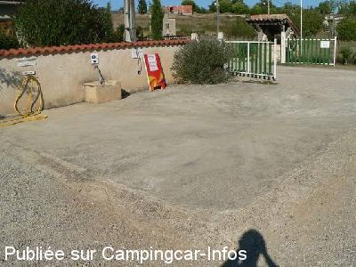
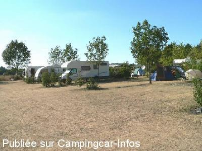

ACS = Aire de services sur camping acceptant le passage pour les services de :
MONTRICOUX
(N° 215)
Accès/adresse :
Route de Bioule D78
Camping Le Clos Lalande ***
82800 MONTRICOUX
Camping Le Clos Lalande ***
82800 MONTRICOUX
Latitude : (Nord) 44.07754° Décimaux ou 44° 4′ 39′′
Longitude : (Est) 1.61171° Décimaux ou 1° 36′ 42′′
Tarif : 2015
C-C, 2 personnes : 15,10 à 18,90 €
Personne + 6 ans : 5,60 €
Enfant - 6 ans : 4 €
Électricité 6 A : 4 €
Animal : 2,50 €
Lave-linge : 5 €
Sèche-linge : 5 €
Taxe de séjour + 13 ans : 0,20 €
Services C-C de passage : 2 €
Type de borne : Plateforme
Services :


Piscine
Tennis
Espace fitness
Baby-foot
Jeux enfants
Tennis de table
Autres informations :
Ouvert du 01/04 au 30/09
60 emplacements
Tel : +33 (0) 563 241 889
contact@camping-lecloslalande.com
http://www.camping-lecloslalande.com

Le 26/08/2006 par aire de vidange / jipé

Le 25/08/2006 par jipe
de
jipé
le 25/08/2006 :
Malgré la charge de travail du mois d'aout, l'accueil est toujours aussi sympa.
Malgré la charge de travail du mois d'aout, l'accueil est toujours aussi sympa.